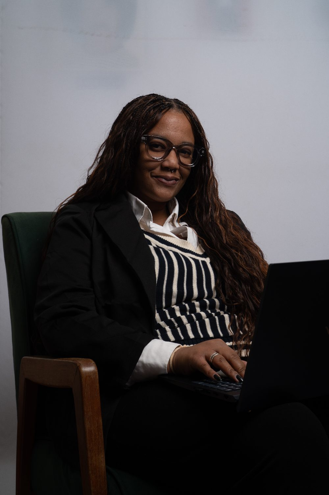
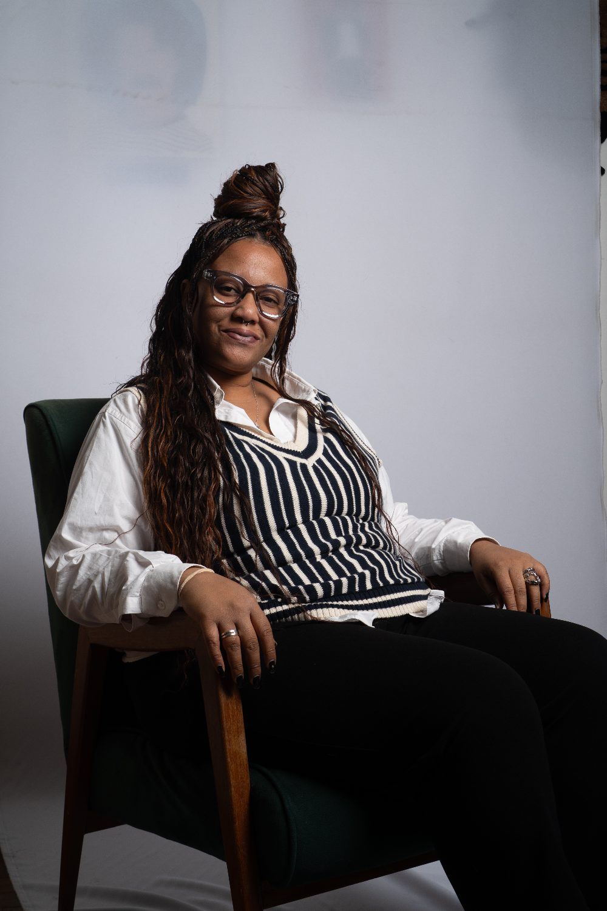

oi, prazer.
Faço conta que fecha, uso IA pra trabalhar melhor, e ensino outras mulheres a fazer o mesmo.


01 · Quem eu sou
Tenho 30 anos e estou na perícia desde 2017. Me formei em RH em 2016 e foi olhando folha de pagamento, encargos e rescisões que eu me apaixonei pelos números.
Hoje atuo em perícia contábil trabalhista e cível. Gosto de laudo bem fundamentado e de explicar tudo sem juridiquês.
e a IA entrou pela porta do trabalho.
Folha, encargos e legislação trabalhista: a base de tudo.
Liquidação, impugnações e assistência técnica. Sentença virando número que faz sentido.
Alguns cursos, muita prática. Testando, errando e aprofundando até aplicar IA em quase tudo.
Tecnólogo em Perícia Judicial e Extrajudicial em andamento.
03 · O que eu construí
Uma ferramenta que desenvolvi para o meu trabalho. Ela extrai dos autos os documentos que importam para o cálculo e me devolve horas que antes iam para a leitura.
Um sistema que organiza as mensagens do WhatsApp e do Instagram para pequenos empreendedores, para que nenhum cliente fique sem resposta.
Sou speaker da Aí pra Elas, a comunidade de IA para mulheres negras. Lá eu divido o que aprendi na prática: a IA pode ser uma aliada real no trabalho, mesmo pra quem não é da área de tecnologia.
05 · Contato
Cálculos, assistência técnica ou uma boa conversa sobre IA no trabalho.